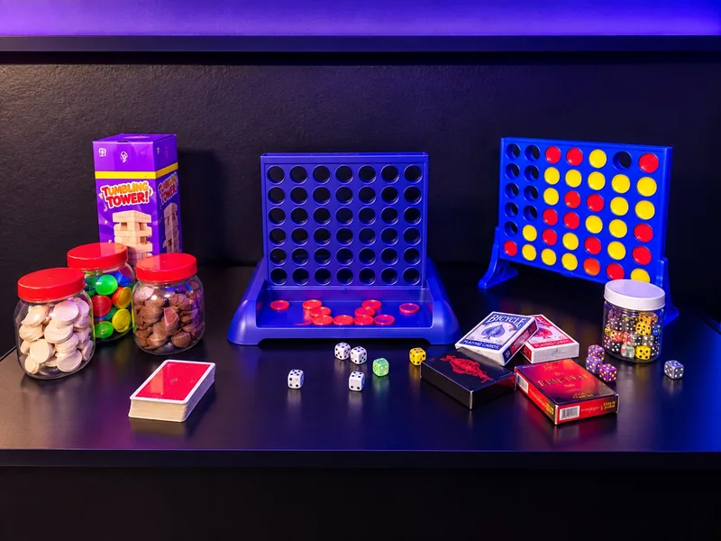

Choose easy board games, console play and desserts without needing everyone to enjoy the same activity.
For friends, families & groupsTime together with
Time together with
something to do.
Games, consoles, desserts, live sport and group activities in one relaxed, family-friendly social venue.

Pick the kind of visitDifferent reasons
Different reasons
to come in.
The venue works whether you want a short activity, a family visit, a football night or a longer catch-up with friends.
Book a table, order something sweet and let the evening move between games, conversation and screens.
Use the venue for Champions League nights, birthdays, organised visits or a bigger social booking.
Something for everyoneFamily afternoon,
Family afternoon,
catch-up or full night out.
You don’t need to be a hardcore gamer. Friends, families and groups can pick the part of the venue that suits them.
Play
Board games, console gaming, team challenges and tournaments.
Watch
Selected live sport, plus movie-night enquiries subject to confirmation of the film, screening permissions and setup.
Eat & chill
Desserts, milkshakes, mocktails, hot drinks and karak chai.
Play with others
Find an open game.
Coming on your own or looking for another player? Ask us about joining a table.
No open games are listed yet.
Tell us what you’d like to play and when you can come.
Reserve a whole tableThe games at the café
Browse our games.
Start with a quick round, pick a longer strategy game or ask about a PS5 setup. For more detail, browse our game guides.

Play times are approximate. Add a game to your table request and we’ll confirm what’s available. Console setups and pricing are confirmed separately.
CATAN
Trade resources, build settlements and plan your next move. A good pick when you want to settle in for a longer game.
- 3–4 players
- Ages 10+
- 60+ min
Monopoly
Buy properties, trade with friends and see who can build the biggest portfolio. A longer game for up to six players.
- 2–6 players
- Ages 8+
- 60+ min
Ludo
Roll, race your pieces home and watch out for anyone trying to send you back to the start.
- 2–4 players
- Ages 4+
- 20–40 min
Four in a row
Drop your counters, block your opponent and line up four. It’s quick to start and easy to play again.
- 2 players
- Ages 6+
- 5–15 min
Tumbling Tower
Take turns sliding a block out and stacking it on top. See who can keep the tower standing.
- 1–4 players
- Ages 6+
- 10–15 min
Cards & dice
Bring a favourite card game to the table or start a simple dice challenge. Player count and play time depend on your game.
Request Cards & dicePlayStation 5
Prefer a controller? Ask us which games and console setups are available for your group.
Request PlayStation 5EA Sports FC 27
Pick your teams for a football match on PS5. Ask us about your preferred mode and controller setup.
- 1–4 local players
- PEGI 16
- Varies by mode
Try clearing a filter or ask us what suits your group.
Plan what to play
Game guides
Check the setup, how many can play and how to request a table or booth in Blackburn.